VisualPortfolio.Net 是策略組合報表（Visual Portfolio）的網路版，提供免安裝、可分享連結、可與桌面版互通的使用方式。
/projects/VP-ZDEMOZadmin 專案不清理）。guest：可由 project 連結進入瀏覽，但不可建立/上傳/複製專案。admin：獨立 /admin 登入流程，用於維運管理。admin、guest 不能註冊為一般帳號。
| 功能 | owner | read-only | guest |
|---|---|---|---|
| 看專案內容 | Y | Y | Y |
| 新增績效 / 刪除策略 | Y | N | N |
| 建立新專案 | Y | Y | N |
| 複製專案 | Y | Y | N |
| 上傳 ZIP | Y | N | N |
| 下載 ZIP | Y | Y | Y（不需登入） |
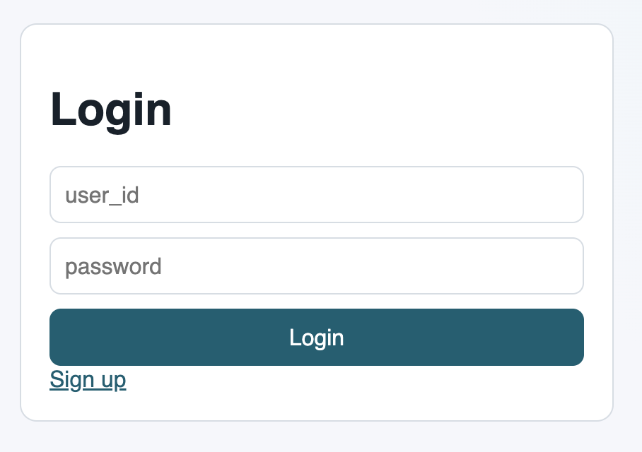
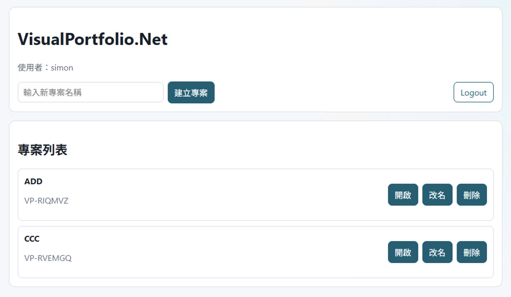
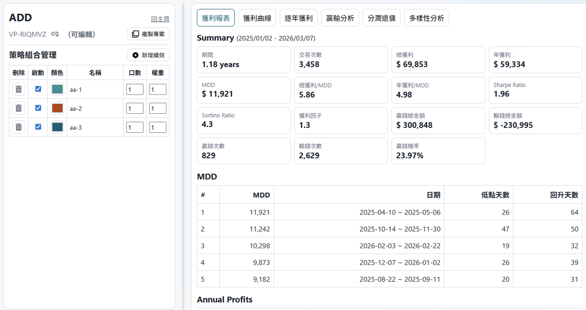
（可編輯），非 owner 顯示 （可檢視）。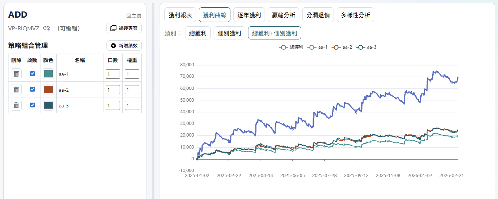
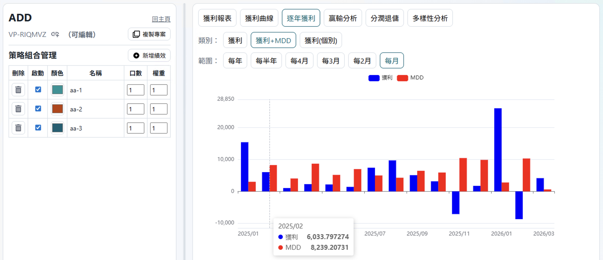
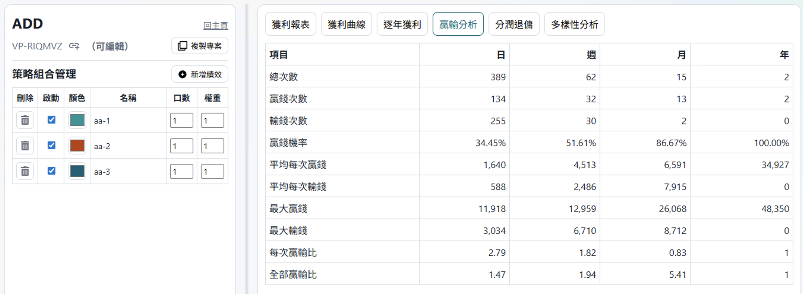
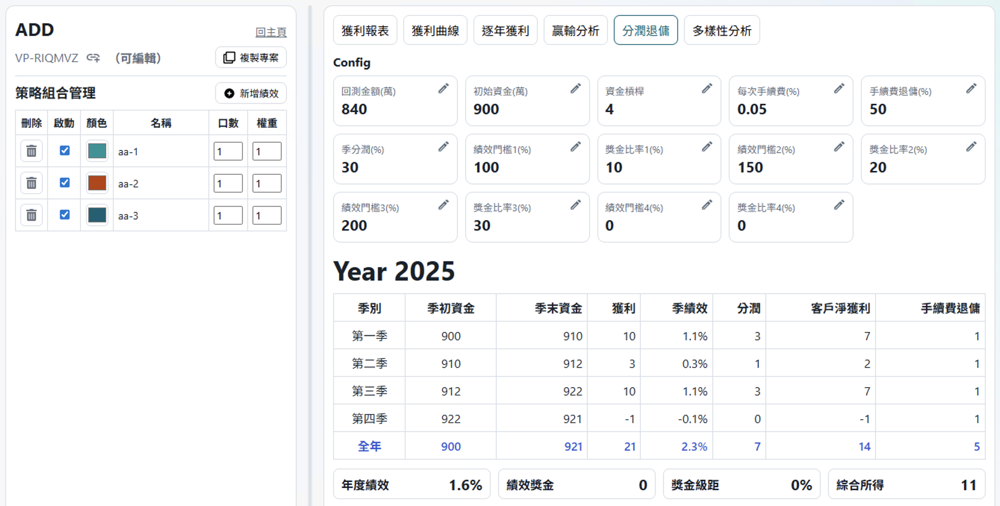
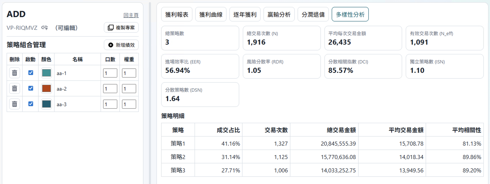
主要指標包含：N、N_eff、EER、RDR、DCI、ISN、DSN；Summary 含 MDD、Sharpe、Sortino、獲利因子等。
請使用 VisualPortfolio.exe v26.03.17.23964 以上版本。
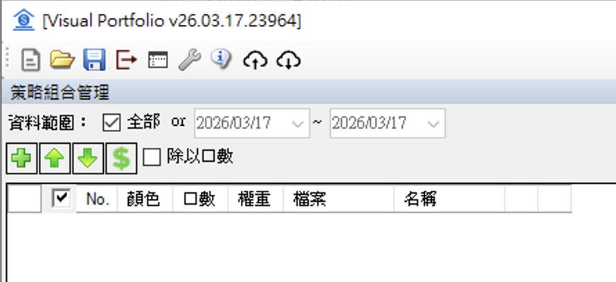
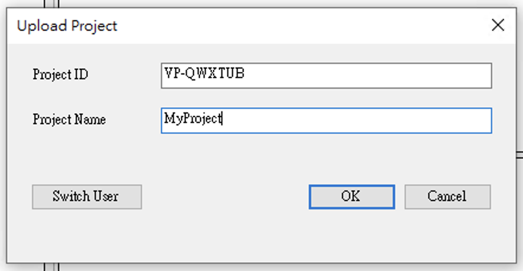
guest 不可上傳。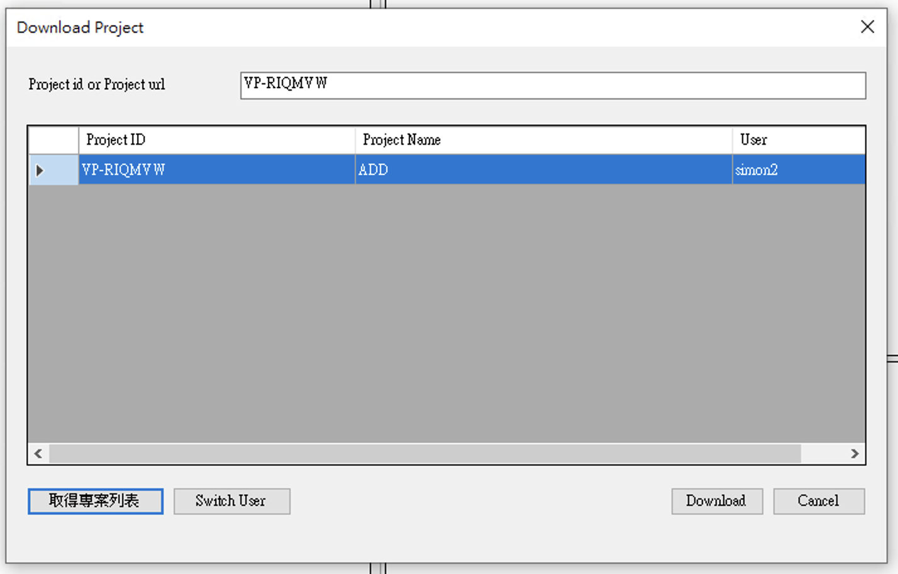
user_id=admin 的專案不會被清理。那是本地試算，僅影響當下畫面，不會存回 server。
因為可檢視模式不會寫入 server，Reload 會回復原始設定。
點擊會開啟 /docs，且重用同一個 docs 分頁。